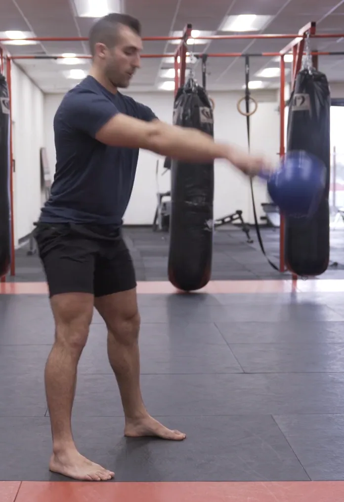
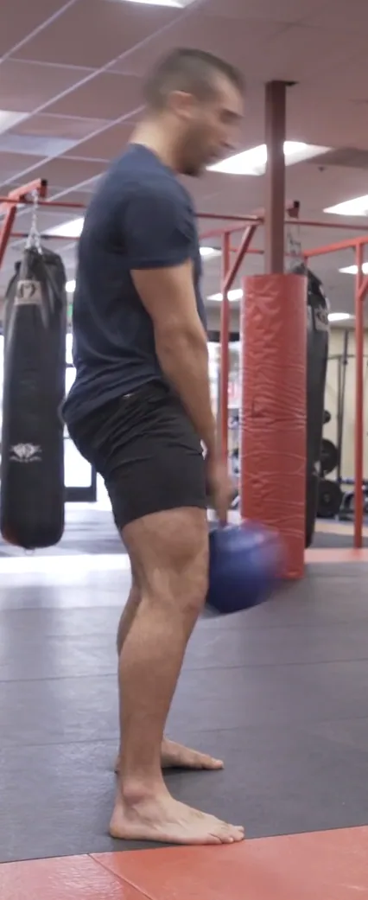
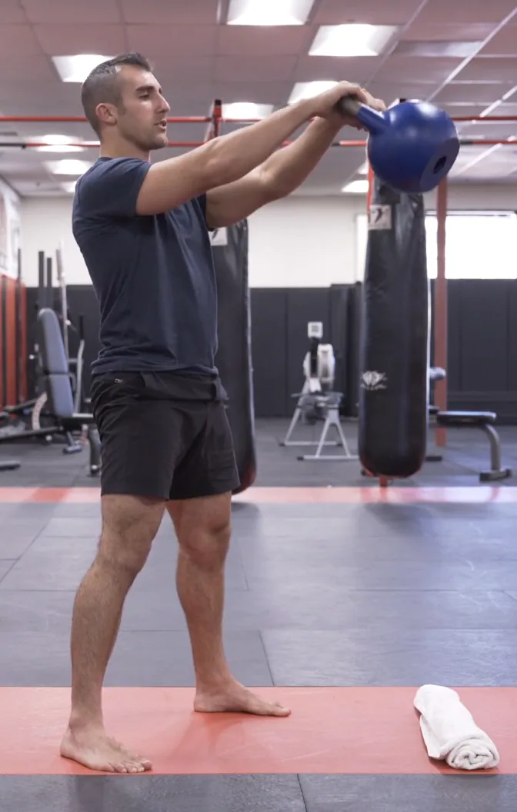
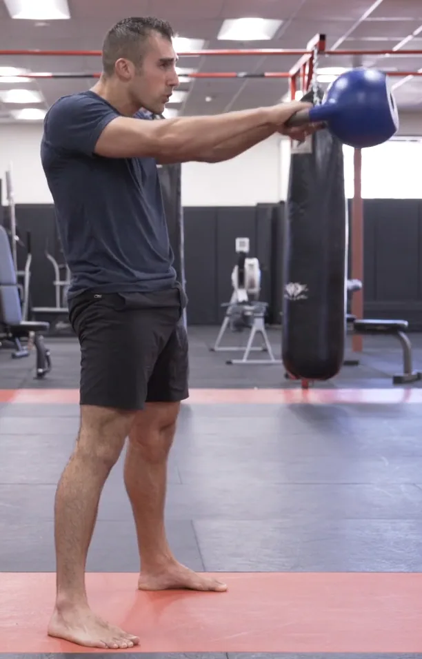
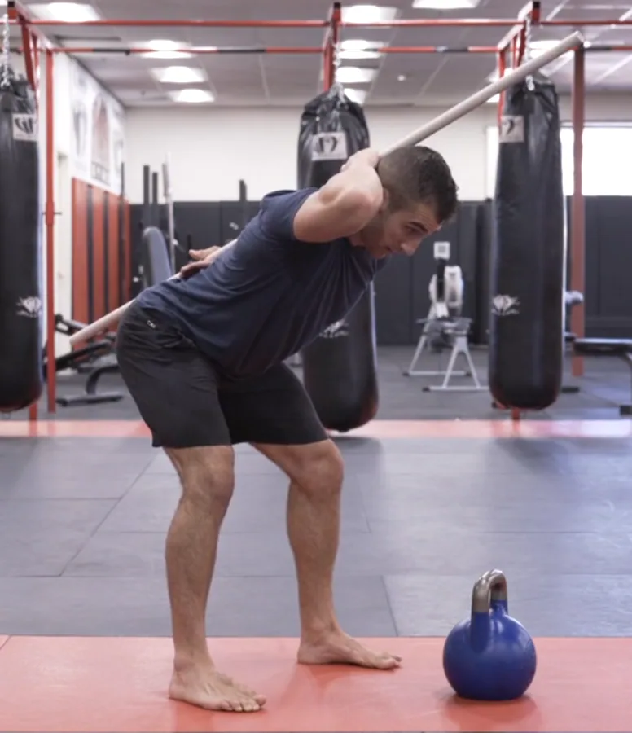
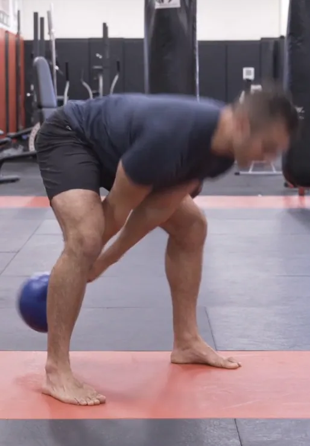
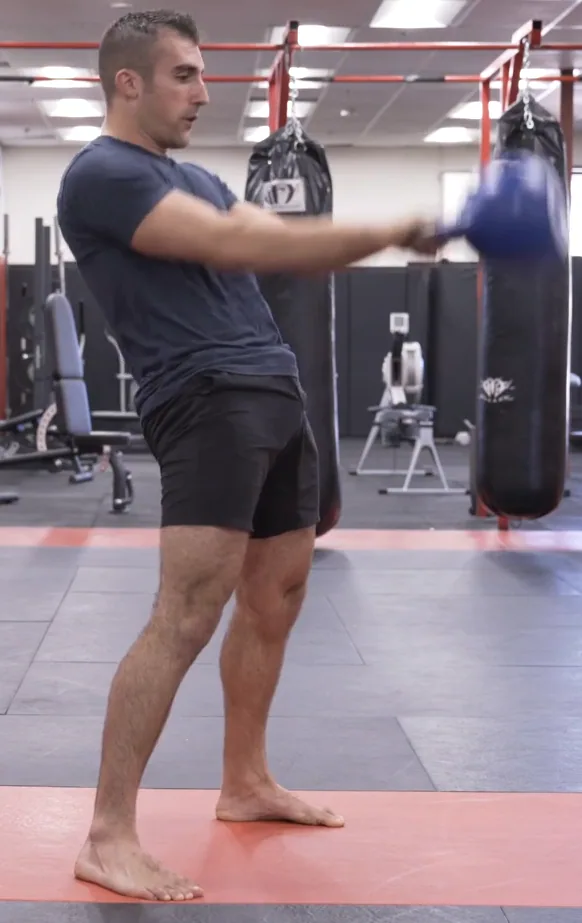
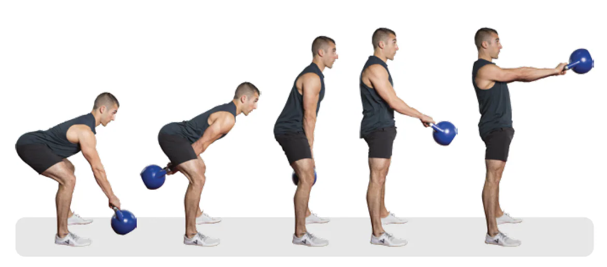

B179 · Back Pain With Your Kettlebell Swing? Read This
Hey {first_name},
Hope you're having a great day so far.
Before spending time with family as Uncle "Zio" Mike, I wanted to shoot this over to you before you do your next kettlebell workout.
You see, when it comes to back pain, there are a lot of different factors involved.
The way you breathe…
What you eat that could cause inflammation within your gut……
How tight/weak certain muscles are...
However, when it specifically comes to the kettlebell swing movement, there are five common mistakes I see many people do that can lead to back pain.
1. Missed Connection
What it Looks Like
 Notice how my hips have already started to move back way too early here
 Corrected Form: I hope you can see that I'm still standing pretty straight, even right before the forearms make connection with my thighs
Tip(s) to Explore
2. Pulling with the Arms
 What It Looks Like When the arms and shoulders lift the kettlebell up into the top of the swing, the kettlebell appears to be drooping down rather than forming a straight line between the arms and kettlebell.
Tip(s) to Explore
3. Loss of Posture (rounding the back)
 What It Looks Like At any stage of the Swing, the following can happen:
Tip(s) to Explore

4. Swinging Too Low
 What It Looks Like Swinging excessively low to the point that the hands and kettlebell are below the knees. Oftentimes this will be coupled with rounding of the back.
Tip(s) to Explore
5. Overextension
What It Looks Like At the top of the Swing, the hips move into excessive extension, i.e. too much forward projection of hips in relation to the shoulders.
 Tip(s) to Explore
With all of these mistakes, this is where you should ideally end up:

Notice how there is always a straight line from the top of the head to the end of the butt.
A big tip for any exercise is to either have a coach or someone else "spot" you for feedback.
Or...
Record yourself from a side and 3/4 angle and "coach" yourself :).
----------------------------------------------------------
I hope you're having a great weekend.
As always, let me know if you have any questions, I read every single response.
-"Zio" Mike Salemi |